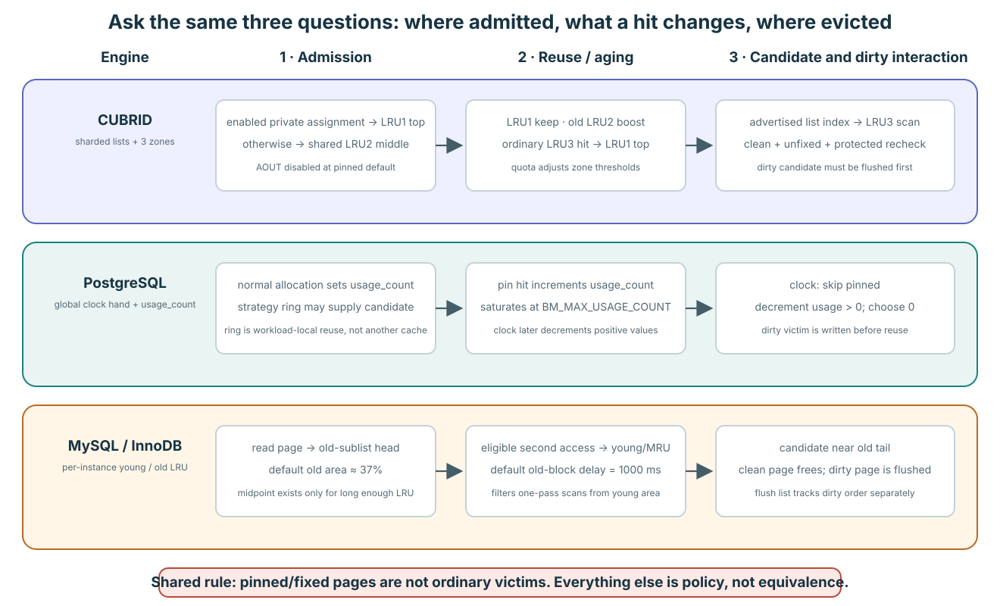

01 · 비교 frame 하나
Page 하나를 세 decision에 걸쳐 따라간다

공통 hard rule은 단순하다. Fix 또는 pin 중인 frame은 ordinary victim이 아니다. Admission, hotness memory, candidate order, dirty handling은 implementation policy다.
| 질문 | CUBRID | PostgreSQL | MySQL / InnoDB |
|---|---|---|---|
| 무엇을 순서화하는가? | Private/shared doubly linked LRU가 여러 개이고 각각 LRU1/LRU2/LRU3로 나뉜다. | Normal shared buffer에 recency list가 없다. Atomic clock hand 하나가 descriptor array를 걷는다. | Buffer-pool instance마다 doubly linked young/old LRU 하나가 있다. |
| Reuse를 무엇으로 기억하는가? | Zone, list position/tick, adaptive per-list activity/quota. | 최대 5인 작은 resident usage_count. | Young/old position, first-access time, eviction-clock distance. |
| Candidate는 어디 있는가? | Policy가 고른 list 하나의 LRU3. | Clock이 만난 첫 unpinned zero-count descriptor. | Old tail에서 역방향으로 scan해 찾은 clean relocatable page. |
02 · CUBRID
Domain을 고른 뒤 그 cold zone을 search한다
- Admission: AOUT이 꺼진 pinned default에서 첫 final unfix는 private-domain page를 private LRU1 top에 넣는다. 그렇지 않으면 shared LRU2 middle에 넣는다.
- Reuse: LRU1은 그대로 둔다. LRU2 page는 list-tick age가 현재 LRU2 count 절반 이상일 때만 LRU1으로 돌아간다. Ordinary LRU3 reuse는 LRU1으로 돌아간다.
- Victim: allocator가 advertise된 LRU index를 consume하고 그 list를 lock한 뒤 LRU3 BCB를 최대 1,000개 검사한다. 모든 candidate는 clean/unfixed/waiter-free identity revalidation을 통과해야 한다.
- Scale: 여러 list와 mutex가 ordering을 shard한다. Private quota의 LRU1/LRU2 threshold는 각각 5%다. Shared default는 shared target의 40%와 5%다.
Scan resistance: private/shared locality와 zone admission이 한 access stream이 다른 stream과 경쟁하는 방식을 줄인다. Source에는 AOUT ghost history가 있지만 pinned build가 ratio를 0으로 강제하므로 active 2Q behavior로 설명하면 안 된다.
Pinned CUBRID: admission과 hit transition, bounded LRU3 scan, quota adjustment.
03 · PostgreSQL
Global clock hand로 reuse credit을 감쇠한다
- Admission: 새로 claim한 shared descriptor는
usage_count = 1을 받는다. - Reuse: backend의 첫 pin이 shared
usage_count를 최대 5까지 증가시킨다. 같은 backend의 nested pin은 private refcount만 바꾸므로 두 번째 shared credit을 얻지 않는다. - Victim: atomic clock hand가 buffer descriptor를 진행한다. Pinned buffer는 건너뛰고 unpinned positive count는 줄이며 unpinned zero를 claim한다. 따라서 count 5는 최대 여섯 번의 full visit까지 살아남을 수 있다.
- Bulk scan: backend-local strategy ring이 bulk read/write와 vacuum을 위해 작은 ID 집합을 reuse한다. 그래도 shared pool의 frame을 가리키며 private buffer pool은 아니다.
LRU order가 아니다:
usage_count = 2인 descriptor 둘 사이에는 “더 오래된 것을 먼저”라는 관계가 없다. Count는 clock visit이 줄이는 bounded reuse credit이지 timestamp나 linked-list rank가 아니다.Pinned PostgreSQL: clock selection, maximum usage count 5, strategy-ring size.
04 · MySQL / InnoDB
Disk read에 young 자격을 주기 전에 old region으로 admit한다
- Topology: buffer-pool instance마다 LRU, free list, flush list를 소유한다. LRU가 512 entry 이상이 되면
LRU_old가 하나의 physical list를 young/old region으로 나눈다. - Admission: disk-read page는 old region head에 들어간다. Old target default는 37%다. Memory에서 직접 만든 page는 young head에 들어간다.
- Reuse: old page는 보통 first access에서
innodb_old_blocks_time이상 지난 뒤 다시 access되어야 young head로 promote된다. Default delay는 1,000ms다. - Victim: allocation은 free block을 얻거나 old tail부터 clean relocatable page를 scan한다. 첫 common foreground scan은 100 entry로 제한되며 이후 pressure iteration은 LRU 전체를 scan할 수 있다.
Scan resistance: one-pass scan은 old region을 채우지만 빠른 first touch만으로 모든 page가 young으로 promote되지는 않는다. Old/new는 resident region이며 evicted identity를 기억하는 2Q ghost list가 아니다.
Pinned MySQL/InnoDB: old boundary와 midpoint insertion, 37%와 1,000ms default, free-block pressure loop.
05 · Dirty page가 progress를 바꾼다
Writeback progress는 별도의 mechanism이 담당합니다
| Engine | Candidate가 dirty일 때 | Background help |
|---|---|---|
| CUBRID | Ordinary detach는 clean을 요구한다. Dirty LRU3는 generation-aware flush가 clean으로 만들 때까지 resident다. | Page-flush와 post-flush/direct-victim progress가 waiting allocator와 협력한다. |
| PostgreSQL | Clock은 dirty unpinned buffer를 고를 수 있다. Allocating backend가 conditional lock, flush, revalidation을 수행할 수 있다. | Background writer가 곧 필요할 가능성이 있는 victim을 미리 clean한다. |
| InnoDB | 즉시 replacement하려면 clean이어야 한다. Foreground pressure가 dirty tail page 하나를 flush하고 free list를 retry할 수 있다. | Page cleaner는 LRU-tail free-page target과 redo/flush-list target을 모두 좇는다. |
“Cold”는 어디를 볼지 답한다. “Clean and unowned”는 지금 reuse 가능한지 답한다.
06 · False equivalence 막기
비슷한 단어가 다른 algorithm을 가린다
| 유혹적인 shortcut | 수정된 설명 |
|---|---|
| “CUBRID LRU3는 InnoDB old와 같다.” | 둘 다 cold region이지만 admission, domain 수, promotion gate, candidate scan이 다르다. |
| “PostgreSQL clock은 approximate LRU다.” | usage_count는 bounded credit이며 같은 count끼리 recency order가 없다. |
| “PostgreSQL strategy ring은 CUBRID private LRU다.” | Ring은 shared-buffer ID의 backend-local array이고 CUBRID private LRU는 pool-global linked residency/quota domain이다. |
| “InnoDB old/new는 2Q다.” | 두 region 모두 resident page를 담으며 이 path에는 general evicted-identity ghost queue가 없다. |
Source shape만으로 winner를 고를 수 없다. Hit ratio와 latency는 effective pool byte, page/row layout, workload, dirtying, cleaning, checkpoint behavior, contention에도 달려 있다. 이 lesson은 measurement hypothesis를 제공하지 benchmark result를 제공하지 않는다.
07 · Retrieval 연습
두 번째 access와 첫 dirty victim을 trace한다
문제
Sequential scan이 page를 한 번 touch하고 나중에 다시 touch한다. 그 뒤 allocation pressure가 dirty 상태의 그 page에 도달한다. Engine별 가능한 policy path를 설명하라.
Primary reading
Maintenance claim에는 상세 evidence note를 사용한다
Pinned primary-source comparison에는 이 teaching page에서 생략한 정확한 source route, concurrency shape, scan strategy detail, evidence boundary가 있다.